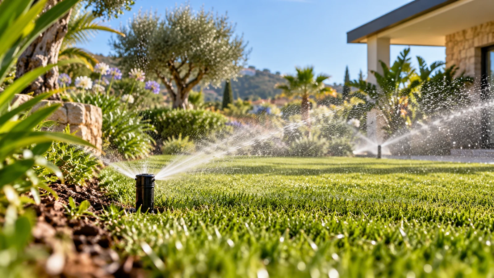
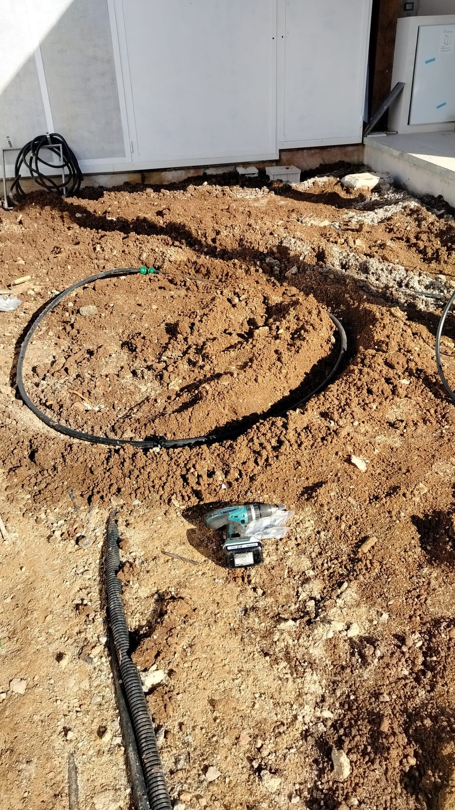
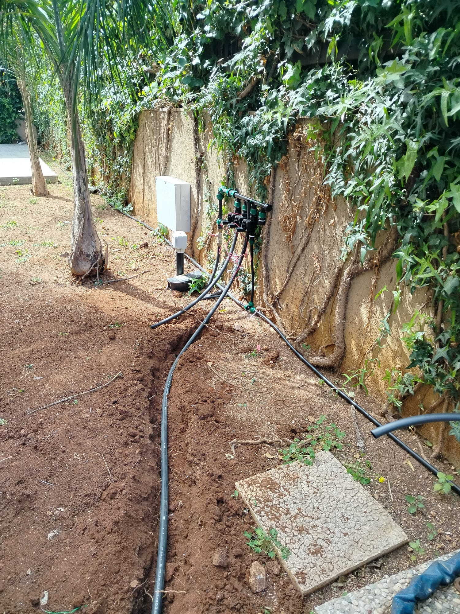
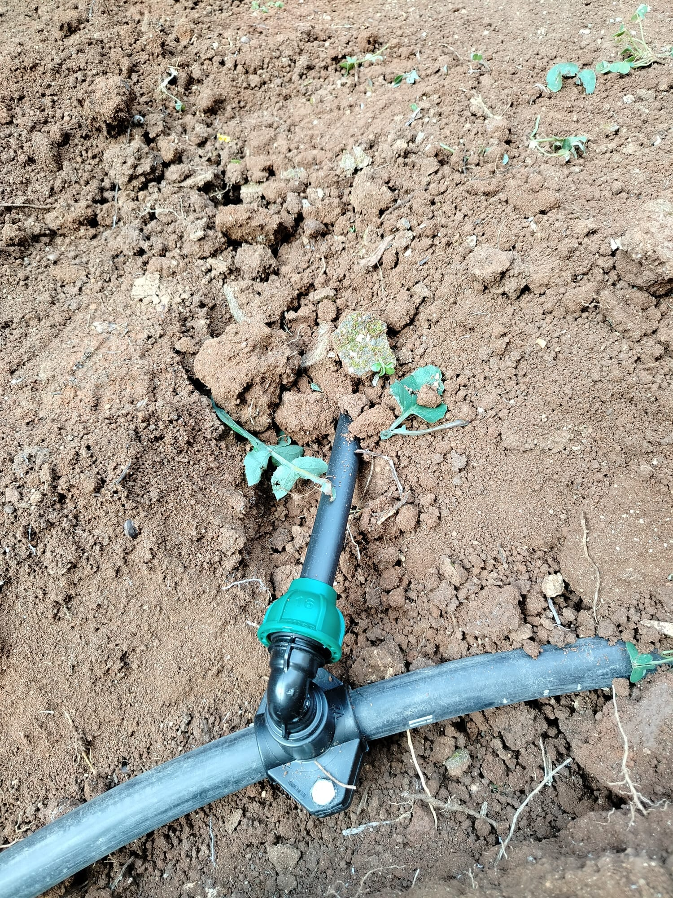
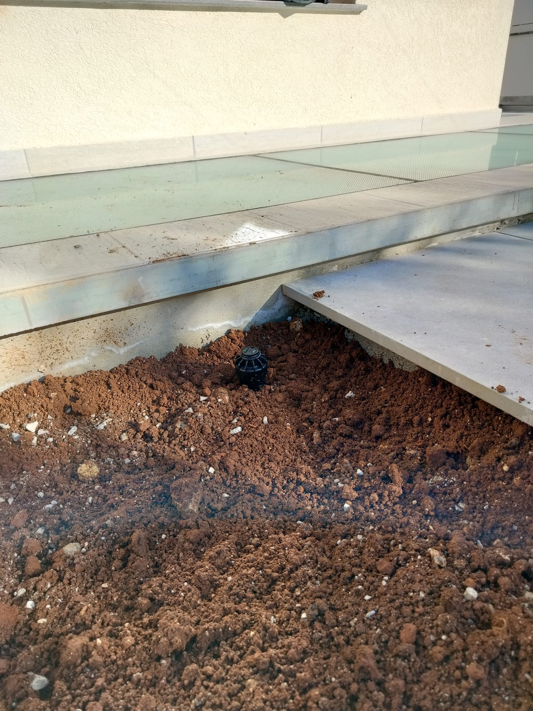
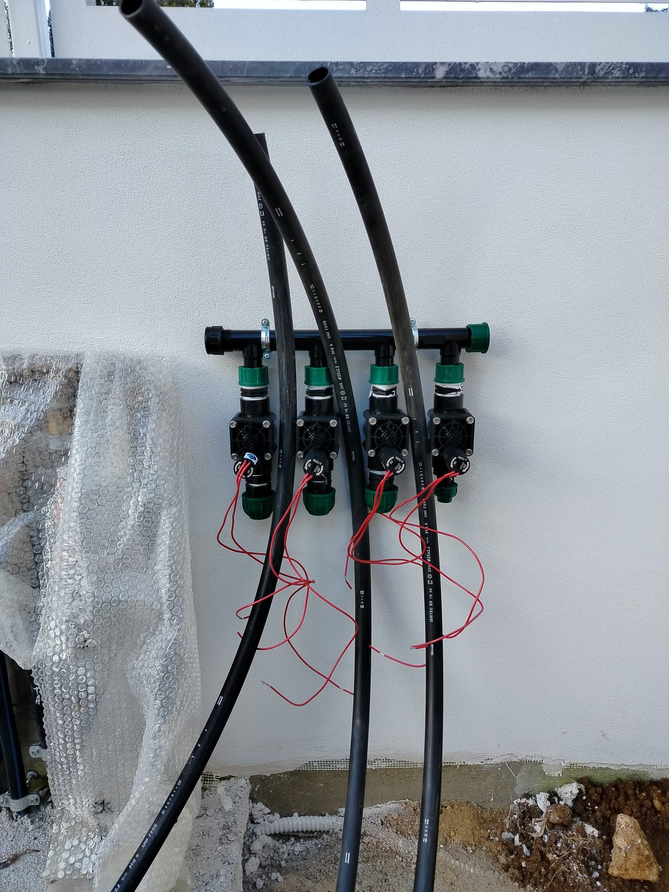

01
Spazio
L'impianto deve inserirsi nel giardino e nelle sue diverse aree.

Soluzioni per accompagnare il verde con un sistema di irrigazione coerente con lo spazio e le sue esigenze.
Un giardino ha bisogno di essere seguito anche quando non lo si vede.
Sa.Ni.Ca. offre servizi legati agli impianti di irrigazione per gli spazi verdi a Palermo e provincia. Le specifiche tecniche e le soluzioni adottate vengono definite in funzione del lavoro da svolgere.
L'impianto deve inserirsi nel giardino e nelle sue diverse aree.
La gestione dell'acqua è legata alle caratteristiche dello spazio verde.
L'irrigazione fa parte della manutenzione complessiva del giardino.
Le soluzioni per l'irrigazione vengono considerate in relazione allo spazio verde e alle esigenze dell'intervento, così da integrarsi con il progetto e con la successiva cura del giardino.





Raccontaci cosa hai in mente e parliamo del tuo spazio verde.